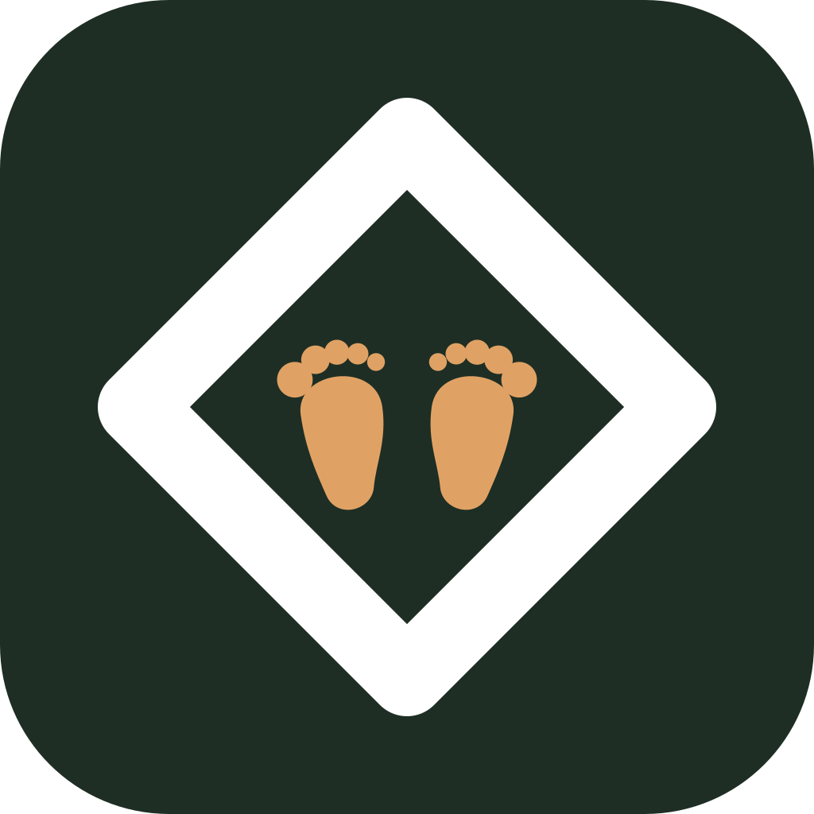
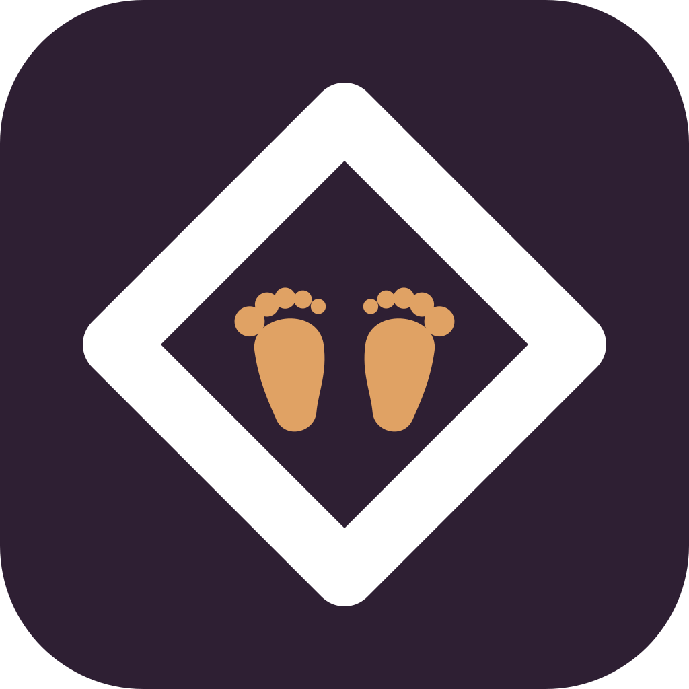
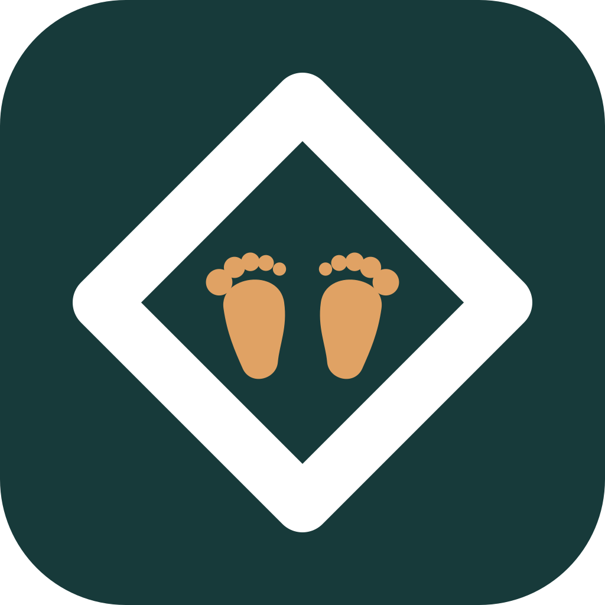

1 · Тёплый тёмный
#241A15 · #E0A264
тёмный, но коричневый — не путается с Gymbar

2 · Ночь приложения
#15171C · #E0A264
цвет тёмной темы; почти чёрный, близнец Gymbar

3 · Индиго
#1F1B33 · #E0A264
ночь, но не синий AsbestosGuard

4 · Какао
#3A231C · #F0B98A
не проваливается в чёрный на светлых обоях

5 · Терракота
#C9714B · #FFF3E8
средний тон из палитры приложения

6 · Абрикос
#E8A184 · #5E3021
самая светлая плитка семьи

7 · Хвойный
#1E2E24 · #E0A264
тёмно-зелёный: спокойный, ни у кого в семье такого нет

8 · Шалфей
#6E8467 · #FFF3E8
средний зелёный, «детская-эко» тон

9 · Слива
#2E1F33 · #E0A264
тёмный фиолет, теплее индиго

10 · Полночный тил
#173A3A · #E0A264
сине-зелёный, холодная альтернатива хвойному